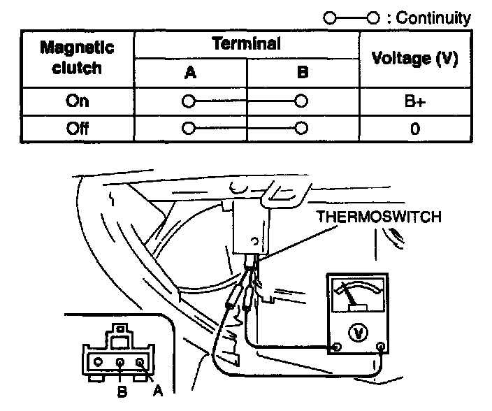
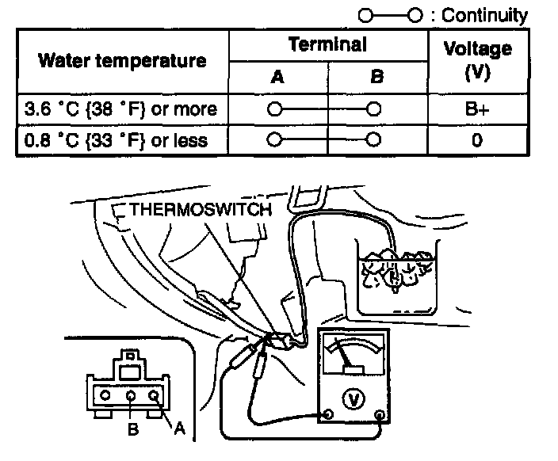

Evaporator Temperature Sensor / Switch: Testing and Inspection
To Determine If The Switch Is Functioning1. Remove the globe compartment.
2. Start the engine.
3. Turn the A/C switch on.
4. Turn the fan switch on.

5. Connect the positive (+) and negative (-) probes of the voltmeter to terminal A and terminal B of the thermoswitch respectively. (The wiring harness connector must be connected to the thermoswitch connector.)
6. Inspect the voltage as shown below.
7. If not as specified, inspect on/off points of the thermo switch.
To Inspect On-Off Points Of The Thermoswitch
1. Disconnect the negative battery cable.
2. Remove the cooling unit.
3. Remove the the thermoswitch
4. Connect the negative battery cable.
5. Connect the the thermoswitch connector to the wiring harness connector.
6. Turn the ignition switch to 1G2.
7. Turn the A/C switch on.
8. Turn the fan switch on.
9. Immerse the sensor part of the thermoswitch in a container of ice water.

10. Connect the positive (+) and negative (-) probes of the voltmeter to terminal A and terminal B of the the thermoswitch respectively.
11. Inspect the voltage as shown.
12. If not as specified, replace the the thermoswitch.